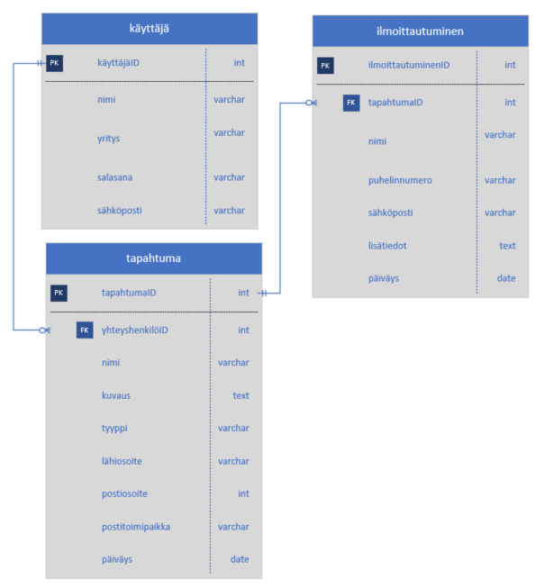

Harjoitustyö 2: tapahtumat
Yleistä
Tehtävänäsi on laatia ilmoittautumisjärjestelmä tapahtumille. Ulkoasussa huomioitava sovelluksen tyyliohje. Voit käyttää työssä Google Fonts-fontteja.
Kokeillaan työn lisäämistä CPanelin alle, voit luoda tietokannan suoraan sinne omilla tunnuksillasi.
Tietokannan rakenne

Kirjautumaton käyttäjä
- Näkee etusivulla tulevat tapahtumat aikajärjestyksessä (seuraava tapahtuma ensimmäisenä)
- Käyttäjä voi suodattaa tapahtumia tapahtuman tyypin mukaan
- Käyttäjä voi valita yhden tapahtuman ja ilmoittautua siihen. Valitusta tapahtumasta näytetään sen tiedot (ks. alla) sekä yhteyshenkilön nimi ja yhteystiedot (puhelinnumero, sähköposti).
- Yhteyshenkilö on tapahtuman kirjannut pääkäyttäjä.
- Voi rekisteröityä uudeksi pääkäyttäjäksi
- Voi kirjautua järjestelmään
Kirjautunut pääkäyttäjä
- Näkee lisäämänsä tapahtumat sekä niihin tehdyt ilmoittautumiset.
- Voi muokata omia tietojaan
- Voi lisätä uuden tapahtuman
- Voi muokata lisäämäänsä tapahtumaa
- Voi poistaa lisäämänsä tapahtuman, tällöin myös kaikki ilmoittautumiset poistetaan tietokannasta.
1. Rekisteröityminen
Tarvittavia tietoja ovat nimi, yritys, sähköpostiosoite, salasana, salasanan vahvistus
2. Ilmoittautuminen
Ilmoittautuessa kirjataan ilmoittautuneelta nimi, puhelinnumero, sähköpostiosoite sekä lisätiedot (vapaa tekstikenttä). Tietokantaan tallennetaan myös ilmoittautumisen päiväys.
3. Tapahtuman lisääminen
Tapahtuman tietoja ovat nimi, kuvaus, tyyppi, lähiosoite, postiosoite, postitoimipaikka ja päiväys. Tapahtuman tyyppi voi olla jokin seuraavista: lapset, liikunta, kulttuuri tai muu.
Lisäominaisuudet
Osallistujamäärä
Tapahtuman osallistujamäärällä olisi hyvä olla maksimi. Jos tapahtumaan on jo riittävästi osallistujia niin siihen ei voida ottaa enää uusia ilmoittautumisia.
Tapahtuman tyypit
Tapahtuman tyypit olisi hyvä olla omassa tietokantataulussa. Luo taulu tyypeille ja hae tiedot sieltä. Tyyppien hallintaa ei tarvitse toteuttaa kirjautuneelle käyttäjälle, riittää kun niitä voi hallita suoraan tietokannan kautta.
Ilmoittautumisten poistaminen
Kirjautunut käyttäjä näkee oman tapahtumansa ja voi muokata niitä. Olisi käytännöllistä jos tämä käyttäjä voisi myös poistaa turhia / vääriä ilmoittautumisia tapahtumalta. Mieti miten tapahtuman ilmoittautumiset kannattaisi näyttää, lisää poista-painike tai linkki ilmoittautumiselle.